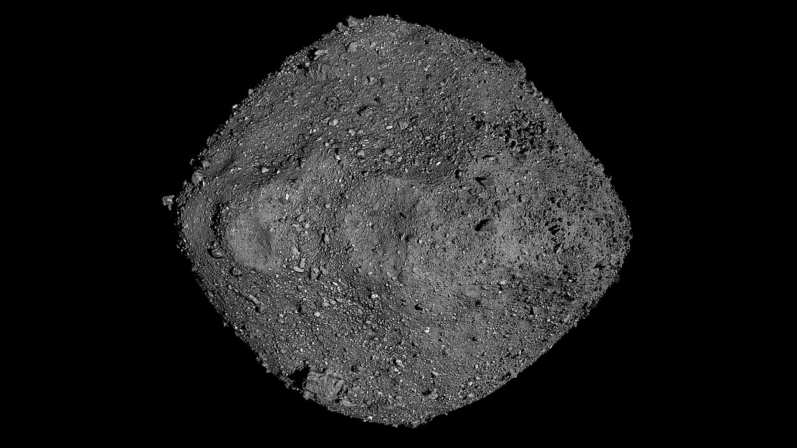
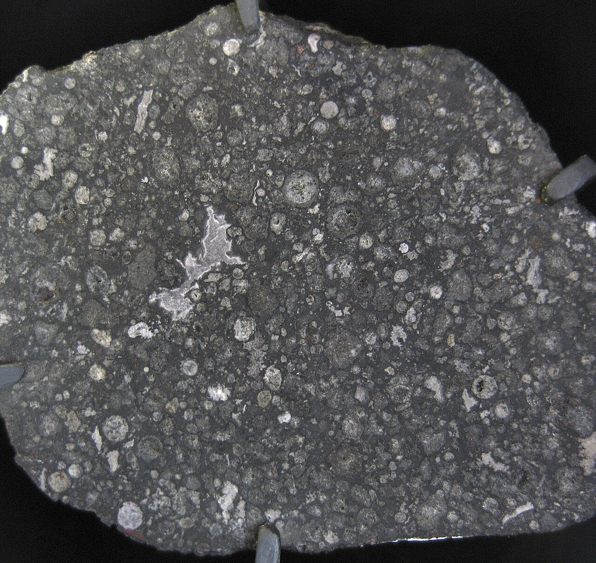
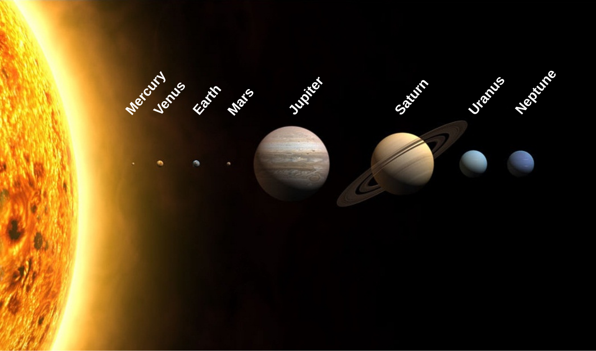
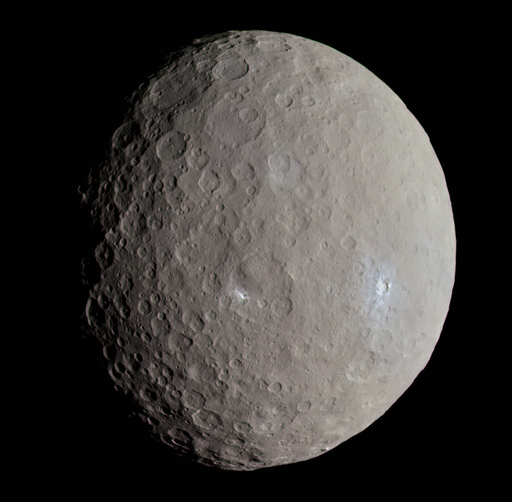
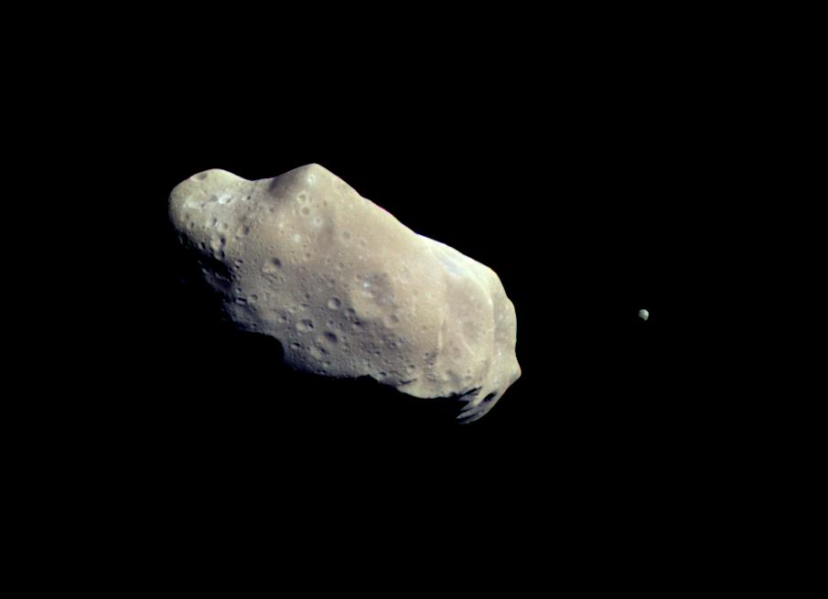
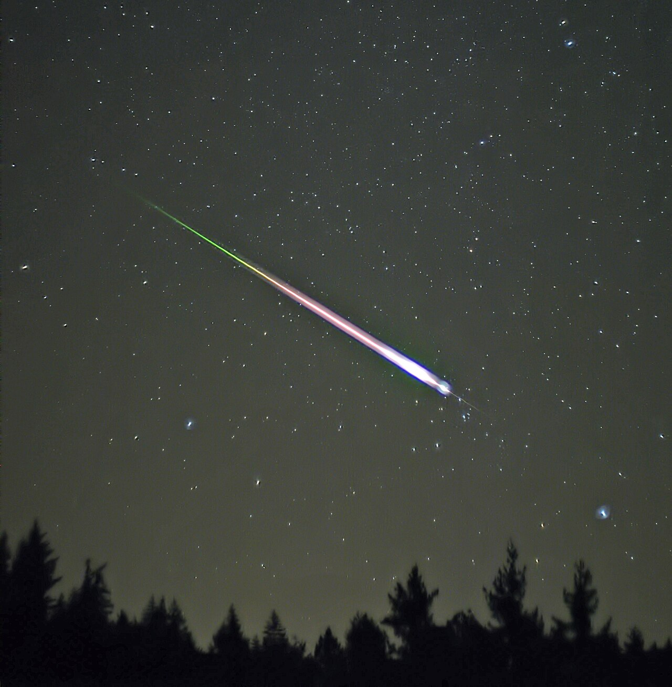
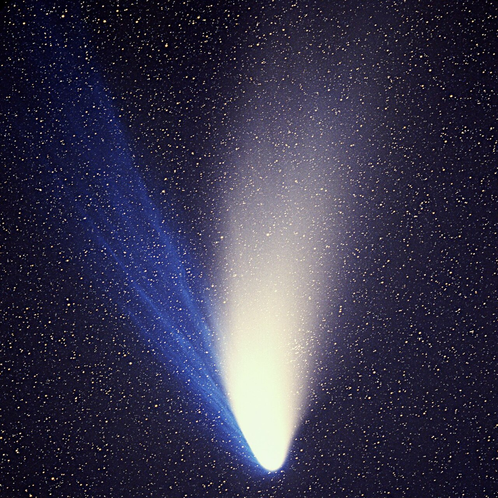
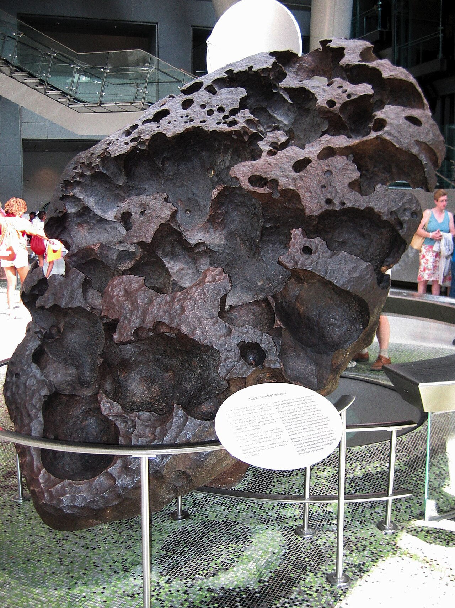

동기 유발
소행성에서 가져온 121 g의 흙
교과서 p. 28학습 목표
- 행성과 소천체의 정의를 구분하여 설명할 수 있다.
- 소천체 탐사 자료를 통해 소천체의 특징을 추론할 수 있다.

NASA/Goddard/University of Arizona, 퍼블릭 도메인

Shiny Things, CC BY 2.0
NASA는 7년에 걸쳐 소행성 베누의 흙 121.6 g을 가져왔다(2023).
지구에도 흙은 많은데, 왜 굳이 소행성의 흙이 필요했을까?
지구에도 흙은 많은데, 왜 굳이 소행성의 흙이 필요했을까?
핵심 아이디어: 지구 물질은 분화·풍화·판 운동으로 계속 바뀌었지만, 작은 소행성은 46억 년 전 태양계 초기 물질을 거의 그대로 간직합니다(→ 개념 3 '분화'). 베누 시료에서는 아미노산 14종과 DNA·RNA 염기 5종이 모두 확인되었습니다(2025 발표). 운영안 4차시.
핵심 개념 1
태양계의 구성 천체
교과서 p. 28 ~ 29(1) 행성이 되려면? · 2006년 국제천문연맹(IAU) 정의
조건 ①태양 주위를 공전다른 행성의 위성이 아님
+
조건 ②충분한 질량자체 중력으로 거의 구형(정역학 평형)
+
조건 ③궤도 주변을 청소궤도에서 지배적인 천체
- 행성: 세 조건을 모두 만족 → 수성 ~ 해왕성 8개
- 왜소 행성: ①, ②는 만족하지만 ③을 만족하지 못함 → 세레스, 명왕성, 에리스, 하우메아, 마케마케
- 태양계 소천체: ②도 만족하지 못하는 작은 천체 → 소행성, 혜성, 유성체 등
- 위성: 행성·왜소 행성·소행성 주위를 공전하는 천체 (예: 달, 이오, 카론)
인터랙티브천체 분류기: 세 개의 질문으로 분류해 보자
천체를 하나 골라 보자.
천체를 고르면 IAU 기준의 세 질문을 차례로 거쳐 분류되는 경로가 표시된다. 베스타처럼 '거의 구형'인지 애매한 경우도 있다.
(2) 지구형 행성과 목성형 행성

WP (NASA 영상 합성), CC BY-SA 3.0
| 구분 | 지구형 행성 (수·금·지·화) | 목성형 행성 (목·토·천·해) |
|---|---|---|
| 질량·반지름 | 작다 | 크다 |
| 평균 밀도 | 크다 (3.9 ~ 5.5 g/cm³) | 작다 (0.7 ~ 1.6 g/cm³) |
| 주성분 | 암석, 철 | 수소·헬륨 기체, 얼음 |
| 위성 수 · 고리 | 적거나 없음 · 없음 | 많음 · 있음 |
| 자전 주기 | 길다 | 짧다 (약 10 ~ 17시간) |
핵심 개념 2
왜소 행성 · 소행성 · 혜성 · 유성체
교과서 p. 30(1) 왜소 행성과 소행성
- 왜소 행성: 세레스(소행성대, 지름 약 940 km)를 빼면 대부분 해왕성 바깥 카이퍼대에 있다. 명왕성에는 질소 얼음 평원, 세레스에는 소금(탄산 나트륨) 침전물이 있다.
- 소행성: 대부분 화성과 목성 사이의 소행성대(약 2.1 ~ 3.3 AU)에 분포한다. 질량이 작아 불규칙한 모양이 많고, 위성을 가진 것도 있다(아이다–닥틸).
- 목성 궤도의 앞뒤 60° 지점에 모인 트로이 소행성, 지구 궤도 가까이 오는 근지구 소행성도 있다.

NASA/JPL-Caltech/UCLA/MPS/DLR/IDA (처리: Justin Cowart), 퍼블릭 도메인

NASA/JPL, 퍼블릭 도메인
(2) 혜성 · 더러운 눈덩이
- 핵: 얼음과 먼지로 된 지름 수 km의 덩어리. 태양에 다가가면 얼음이 승화한다.
- 코마: 핵을 둘러싼 기체·먼지 구름, 꼬리: 태양 반대쪽으로 뻗는다.
- 이온(가스) 꼬리: 태양풍에 밀려 태양 정반대로 곧게 뻗고 푸른빛
- 먼지 꼬리: 복사압에 밀리며 궤도를 따라 휘어지고 노르스름함
- 궤도 이심률이 크며, 단주기 혜성(200년 미만)은 주로 카이퍼대, 장주기 혜성은 태양계를 공 모양으로 둘러싼 오르트 구름에서 온다.
시뮬레이션 1혜성의 궤도와 두 개의 꼬리
이온 꼬리먼지 꼬리
태양에 가까워질수록 코마와 꼬리가 커진다. 근일점을 지나 멀어질 때 꼬리가 어느 쪽을 향하는지, 두 꼬리의 방향이 왜 조금 다른지 관찰하자.
(3) 유성체 · 유성 · 운석
- 유성체: 행성 사이 공간을 떠도는 작은 암석·금속 조각(소행성 파편, 혜성이 흘린 먼지)
- 유성: 유성체가 대기로 들어와 마찰열로 타며 빛을 내는 현상. 혜성 궤도를 지구가 지날 때 유성우가 내린다.
- 운석: 다 타지 않고 지표에 떨어진 것. 구성 물질에 따라 석질(가장 흔함), 철질, 석철질 운석으로 나눈다.

Navicore, CC BY 3.0

E. Kolmhofer, H. Raab (Johannes-Kepler-Observatory), CC BY-SA 3.0
핵심 개념 3
태양계 천체의 분화와 운석
교과서 p. 32분화된 천체 vs 분화되지 않은 천체
- 분화: 충돌 에너지와 방사성 원소(²⁶Al 등)의 붕괴열로 천체 내부가 녹으면, 밀도가 큰 철·니켈은 가라앉아 핵, 가벼운 규산염은 맨틀·지각이 되는 과정
- 분화된 천체: 행성, 왜소 행성, 일부 큰 소행성(베스타). 부서진 조각은 철질 운석(핵), 석철질 운석(핵–맨틀 경계), 에이콘드라이트(지각)가 된다.
- 분화되지 않은 천체: 대부분의 작은 소행성, 혜성의 핵. 녹은 적이 없어 원시 태양계 성운에서 응축된 작은 알갱이(콘드룰)를 품은 콘드라이트 운석이 된다. → 태양계 초기 물질의 타임캡슐
시뮬레이션 2미행성 데우기 → 분화 → 충돌로 부서지기
- ① 집적금속(회색)과 규산염(갈색) 알갱이가 고르게 섞인 미행성
- ② 가열²⁶Al 붕괴열·충돌열. 지름이 클수록 열이 덜 빠져나가 더 뜨거워진다.
- ③ 분화녹은 금속은 무거워 가라앉고 규산염은 떠오른다.
- ④ 충돌·파괴다른 천체와 부딪혀 부서진 조각이 운석이 되어 지구로 온다.
지름을 작게(약 100 km 이하) 하고 같은 과정을 거쳐 보자. 녹지 않은 천체가 부서지면 어떤 운석이 될까?

Dante Alighieri, CC BY-SA 3.0
데이터 탐구
소행성 궤도 분포에서 '빈자리' 찾기 · 커크우드 간극
탐구 개요
소행성대에는 130만 개가 넘는 소행성이 알려져 있다. 이들의 궤도 긴반지름을 히스토그램으로 그리면 이상하게 소행성이 거의 없는 빈 틈이 나타난다. 1866년 커크우드가 발견한 이 틈의 위치를 데이터로 찾고, 앞 차시의 케플러 제3법칙으로 원인을 밝혀 보자.
히스토그램 그리기소행성 4000개 표본의 긴반지름을 구간으로 나누어 센다. 구간 너비를 바꾸면 그래프가 어떻게 달라지는가? 너무 넓거나 좁으면 무엇이 문제인가?
간극 찾기개수가 뚝 떨어지는 위치를 클릭해 표시하고 a 값을 읽는다.
공명 계산목성(a = 5.203 AU, P = 11.86년)과 공전 주기가 간단한 정수비(3 : 1, 5 : 2, 7 : 3, 2 : 1)를 이루는 긴반지름을 P² = a³으로 계산해 간극 위치와 비교한다.
설명하기왜 공명 위치에서는 소행성이 사라질까? 반대로 3 : 2 위치(힐다군)와 1 : 1 위치(트로이군)에는 왜 모여 있을까?
데이터 랩소행성 긴반지름 히스토그램
그래프를 클릭해 간극 위치에 표시해 보자.
표본은 JPL SBDB의 소행성대 긴반지름 분포(공명 간극, 헝가리아군, 힐다군, 트로이군 포함)를 본떠 만든 4000개의 모의 자료이다. 실제 전체 자료는 JPL SBDB 검색 도구에서 내려받을 수 있다.
🧮 공명 위치 계산표 (직접 채우고, 버튼으로 확인)
| 공명 (목성 : 소행성 공전 횟수) | 소행성 주기 P (년) | a = P2/3 (AU) | 데이터에서 찾은 위치 |
|---|---|---|---|
| 1 : 3 | 11.86 ÷ 3 = 3.95 | 간극 | |
| 2 : 5 | 11.86 × 2/5 = 4.74 | 간극 | |
| 3 : 7 | 11.86 × 3/7 = 5.08 | 간극 | |
| 1 : 2 | 11.86 ÷ 2 = 5.93 | 간극 | |
| 2 : 3 | 11.86 × 2/3 = 7.91 | 무리 (힐다군) |
분석 질문
1. 구간 너비를 0.15 AU로 크게 하면 간극이 어떻게 보이는가? 적절한 구간 너비를 고를 때 고려할 점은?
구간이 너무 넓으면 좁은 간극이 이웃 구간과 평균되어 사라진다. 너무 좁으면 각 구간의 개수가 적어 우연한 들쭉날쭉(통계적 잡음)이 간극처럼 보인다. 찾으려는 구조의 크기(간극 폭 약 0.03 ~ 0.05 AU)보다 작으면서 각 구간에 충분한 개수가 들어가도록 고른다(여기서는 0.01 ~ 0.03 AU).
2. 공명 위치에서 소행성이 사라지는 까닭을 설명해 보자.
예를 들어 3 : 1 공명 위치의 소행성은 목성이 1바퀴 돌 때 정확히 3바퀴를 돌아, 궤도의 같은 지점에서 목성과 반복해서 가장 가까워진다. 같은 방향의 작은 중력이 계속 쌓여(그네를 같은 타이밍에 미는 것처럼) 궤도 이심률이 커지고, 결국 화성·지구 궤도를 가로지르다 충돌하거나 튕겨 나간다. 이렇게 빠져나온 소행성이 근지구 소행성과 운석의 주요 공급원이다.
3. 심화 · 힐다군(3 : 2)과 트로이군(1 : 1)은 공명 위치인데도 소행성이 모여 있다. 왜일까?
이들은 궤도 배치상 목성과 가까이 만나지 않는 '안정한 공명'이다. 힐다군은 목성과 가장 가까워질 때 항상 목성에서 멀리 떨어진 지점에 있고, 트로이군은 목성 궤도의 앞뒤 60°(라그랑주점 L4, L5)에 머물러 오히려 공명이 보호막 역할을 한다. 공명이 항상 '파괴'만 하는 것은 아니다.
형성 평가
개념 확인 문제
그림·자료 출처
사진: NASA, NASA/JPL, NASA/Goddard (Wikimedia Commons 경유) 및 Wikimedia Commons 이용자 사진. 소행성 궤도 자료는 NASA JPL SBDB 분포를 본뜬 교육용 모의 표본입니다. 모식도와 시뮬레이션은 직접 만들었습니다.